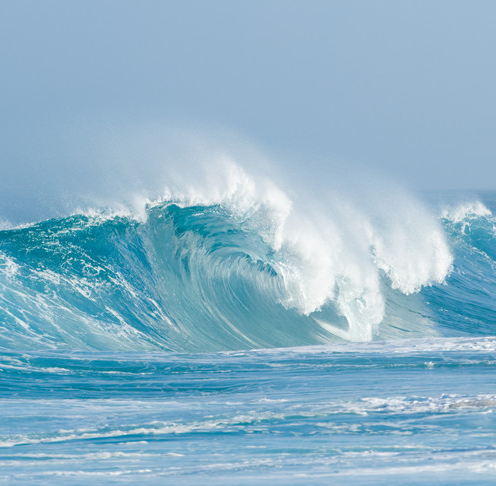

Oíche na Taoide
|
||
Taoide EileMiondráma a bhaineann le cúrsaí GruaigeDramatis Personae
|
Seomra an Lóistín - Londain Shasana
An dream atá i láthair:Tharla san oíche údaí, beirt ar leaba thriúir, ar a leasluí, agus iad ag imirt taipléise, Uilliam agus Peadar. Bríste liath-scláta gaibairdín á chaitheamh acu beirt - brístí a ceannaíodh san am chéanna, an lá céanna, san mhargadh chéanna ar an airgead chéanna.
Tá tábla beag triantánach in aice na fuinneoige. Tá pláta mionghlanta ag obair itheacháin air; agus os cionn an phláta, tá aghaidh seanmhná, aghaidh na seanmhná boichte. Thug Sinséar ar ais leis í, ag teacht ón tsiopa dó, as siocair go dtáinig sé uirthi agus a soc i mbosca bruscair aici, sa tóir ar a béile tráthnóna.
Níl Sinséar le feiceáil, ach cluintear ón léibheann amuigh a bhéal bán ar obair ar bhean an lóistín, agus é ag iarraidh tabhairt uirthi geall a chur ar chú dó. Cluintear gáirí ón bhean chéanna in aichearracht.
An tSeanbhean Bhocht: Nár dheas ón fhear rua é, a stócacha.
Leagann sí na huirlisí ar an phláta agus toisíonn ar an Altú i ndiaidh Bídh.
Peadar lena chéile comhraic taipléise: What's she talkin' about now?
Uilliam: She's a sort of a Murmerer [1]
Peadar leis an tseanbhean: Good girl, you weren't long doing away with them! Did I not see a pictur on that plate earlier on?
Sinséar - ón léibheann - : ...on'y I have the head to wash, the night...
Uilliam le Peadar: She wouldn' be on for sittin' up on us?
Peadar: Indeed an' she could be fit for it.
An tSeanbhean Bhocht: Ba deas uaidh. An boc ruadh! ..... RED!
Peadar: The best o' good Kerr's Pinks, Mrs.
Uilliam leis an tseanbhean: Swafflington Street Market - the baldy boy - low-set
Peadar: Full set o' chins and a double row o' buck teeth till set them aff.
Uilliam: I wouldn' like to be peelin' for him. Shoot out an' get 'er an ounce o' snuff.
Peadar: Shoot you out an' get it.
Cluintear amhrán de chuid Bheanna Boirche á chur suas i ndoras an tseomra.
Peadar: Him an' he's oul Mountains of Mourne. 'ed sicken ye.'
Peadar os ard: We're sick listenin' about them eagles, Ginger.
Sinséar leis an tseanbhean: An bhfuair tú do sháith le hithe, a bhean uasail?
An tSeanbhean Bocht, agus í ag gáirí: Fuair agus tuilleadh, a thaiscidh. Is méanar don bhean a chíorfas an cúl breá gruaige sin s'agat. Go raibh céad míle maith agat as an bhéile.
Sinséar: Níl a bhuíochas ort, a stór. Sciorrfaidh duine den dá ghiolla sin amach a cheannacht pinse snaoisín duit, ar ball. Féadann tú preabadh leat isteach a luí leo, níos moille, a fhad is nach mbeidh mise ann, ... ach bíodh do choróin Mhuire leat. Seo bonn an tsnaoisín.
Leagtar capall airgid ar an tábla triantánach. Toisíonn an gáirí láidir acu, ag an tseanbhean agus ag Sinséar
Peadar: What's them eegits laughin' about?
Sinséar: Peadar, slide out, like a good gasan, an' put on a pot o' tae. The aul crater'll take a mouthful I'm sure after 'er wee feed. I have to wash the head.
Stánann an triúr eile sa tseomra ar an tuáille ar a ghualainn, sular dhírítear súil ar an bhosca faoina ascaill. Imíonn sé leis i dtreo sheomra an doirtil.
Peadar: I see the Tide's away out the night again.
An tSeanbhean Bhocht: Nach aoibhinn don chailín a imeos leis mar atá an scifleog triomaithe ag imeacht anois.
Uilliam agus a shúil mhachnamhach ar mheangadh na seanmhná: Maybe she'll fally im out.
An tSeanbhean Bhocht: is mé a leanfadh, mar a leanas an taoide an ghealach ach an óige a bheith ar ais agam i gcorp, i gcroí, i gceann, is i ngruaig.
[1] Dream creidimh - a religious sect.